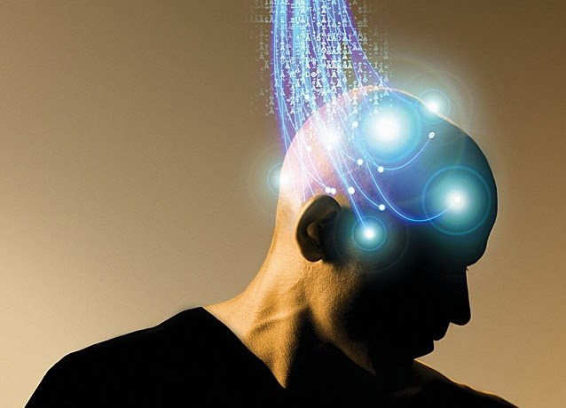

Assignment
An interactive wearable concept based on the biometricbrainwavedata of people who are in the same room as you
I'll start this article in English, since the exercise was presented in English. I have this thought experiment, as you may call it, in which every thought you have is open to the public. I heard different people talk about this fantasy like Sam Harris in his podcast, or the beginning of Miava's Every Heart Is A Beating Piece of Shit. In this case privacy would be in its most extreme form of abundance that we can imagine.
Imagine that there is this wearable, in the form of a hat or a beanie that you could wear on your head, that will transfer your thoughts and feelings to a place online, a databank or cloud-service. Companies like Google or Amazon could have access to this technology and thus your thoughts, your most private parts. They would be able to sell those thoughts to other companies, or to their own companies. Think about South-Korea where Samsung makes up 1/3rd of the national GDP. Almost all electronics are from Samsung, the (public) transport is provided by Samsung, the healthcare is provided by Samsung. Such a company could have immense influence and power on its customers, which in this case are almost the entire population of one country.
Now such a wearable would only really work if it provided enough of the good stuff to make up for the bad stuff. Google Maps is a good example of this, yes people are giving up their location and GPS data, but in return they get a smooth and reliable experience in navigation and location tracking. A “big tracker” as I like to call it, should therefore provide users with gigantic advantage to make up for the bad stuff. Communication with your peers purely based on non-verbal communication would make for a rather interesting setting. In huge venues like events, or conferences, where they are easily 1000+ attendees, all this data could be used to direct users to each other, in the form of a neural network. A digital neural network could be mapped to get attendees together with similar interests and goals, like bringing investors with interest in Eastern-Europe and developers from Romania together without any preperation or mapping. All of this would be possible without getting this data from the users before the event, in other words, attendees would only have to wear this technology at the event for the concept to be a success. Actuators aren't neccesary since most EEG-like brainmapping can also work in reverse and push people to where they need to go. They can "follow their instinct" and don't have to worry about looking on their phone, it needs no personal preparation, no forms, no difficulties, it is truly a futuristic way of connecting with others.

Research
Ik vertel hier verder in het Nederlands. Mijn onderzoek van Wearables begon eigenlijk vorig jaar toen ik zelf op zoek was naar een wearable. Mijn horloge kwam van Aliexpress, zag er goed uit, maar had niet veel denderends qua functionaliteiten. Via een podcast van Rhonda Patrick kreeg ik te horen hoe belangrijk slaap is voor het goed functioneren in je leven. Je leert dingen pas echt in je slaap, je immuunsysteem heeft er onwijs veel baat bij, en je algehele gezondheid houdt erg van minimaal 7 uur slaap. Dit gecombineert met mijn moeite om in de ochtend wakker te worden bracht mij op een smartwatch van Xiaomi, die mijn slaap kan tracken, en mij wakker kan maken wanneer ik genoeg slaap heb. Sindsdien wordt ik een stuk fijner wakker, heb ik inzicht in mijn slaapgedrag, en biedt het ook nog andere voordelen. Een timer op je pols voor bij het sporten, even je hartslag meten wanneer je op het randje van een paniekaanval zit, en de mogelijkheid om meldingen te ontvangen en te zien zonder je telefoon te pakken.
Al met al denk ik dat er nog veel ruimte zit in de ontwikkeling van Wearables, al maakt dat dit onderwerp wel juist interessant. Er is veel data te oogsten vanuit wearables, en met de opkomst van Neural Networks en machine learning zijn er nog genoeg toepassingen voor deze technologie te vinden.
Reflect
Ik vind het onderwerp van Wearables erg interessant. Er is een zekere "direct-heid" die komt kijken bij wearables die je niet snel bij andere technologieën vindt. Je kunt data verkrijgen die direct van jouw lichaam komt, op dat exacte moment. Zo'n mate van inzicht en dataverzameling heb ik nog niet terug zien komen bij andere technologieën. Het kan mij daarbij ook een beetje bang maken, denk je maar eens in welke mogelijkheden dit biedt voor een bedrijf als Amazon wanneer ze deze technologie gaan pushen. Sinds Alexa op de markt gekomen is, is Amazon meer een data-hoarding bedrijf geworden dan een webshop. Ze kunnen hun prijzen ongelofelijk competitief maken omdat het gros van hun inkomsten uit de verzamelde data komt. Met alle data die een bedrijf weet te vangen is veel mogelijk, en zou een bedrijf veel invloed uit kunnen oefenen op haar klanten. Toch geloof ik ook dat er nieuwe wetten en regelgevingen aan zitten te komen wat betreft smart technology. Zoals bij elke nieuwe technologie wordt er vaak een dystopie geschetst over de verschrikkelijke gevolgen die dit zal hebben voor de maatschappij. De geschiedenis vertelt echter een genuanceerder verhaal, waar tijd nodig zal zijn om een concrete uitspraak hierover te doen.
Zelf zou ik niet heel snel iets met wearables willen maken omdat ik van mening ben dat de kunst en de magie van deze technologie zich verstopt in de lange termijn. Wearables hebben een minder directe output qua sensoren die in het nu gebruikt kunnen worden, de focus van de data richt zich meer op preventie en inzicht op de lange termijn.